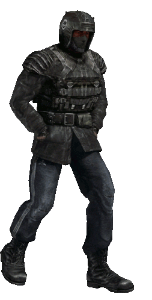

S.T.A.L.K.E.R. FAQ - Turtles-FTW
"What patches(s)/mod(s) do you use?"
~~~ I use ZRP (Zone Reclamation Project) for Shadow Of Chernobyl, and use SRP (Sky Reclamation Project) for Clear Sky.
(You could also install PRP [Pripyat Reclamation Project] for Call Of Pripyat, but the game doesn't really need it. It's already stable enough.)
"The Legends of The Zone Trilogy says I'm buying the Enhanced Editions! I don't want those!"
~~~ You get the original versions of the games when you buy the Enhanced ones. GSC Game World, for some reason, delisted the original games and replaced them with
the Enhanced Editions, but luckily GSC doesn't suck TOTAL donkey balls and you get the originals bundled in with them.
